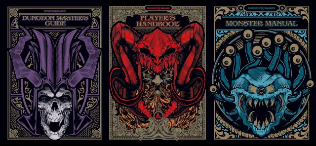

A brief history of DnD
Since its inception in 1974, Dungeons & Dragons (D&D) has become a cornerstone of tabletop role-playing games (RPGs). Created by Gary Gygax and Dave Arneson, the game's first edition laid the foundation for a fantastical realm where players could collaboratively weave epic narratives. The game rapidly gained a dedicated following, leading to the release of successive editions that refined rules, expanded settings, and embraced new generations of players. The '80s and '90s saw D&D's popularity soar, with its iconic second edition solidifying its place in pop culture. The franchise weathered challenges in the form of the "Satanic Panic" during the '80s, as well as transitions in ownership. In 2000, the third edition revitalized the game with streamlined mechanics and an Open Gaming License that encouraged third-party content. The fourth edition in 2008 introduced controversial changes, polarizing the community, but the subsequent fifth edition, launched in 2014, achieved widespread acclaim for its return to the series' roots, accessibility, and emphasis on storytelling. Currently, D&D enjoys unprecedented popularity, fueled by actual play shows, online platforms, and a vibrant community that continuously expands its horizons through creative storytelling and imaginative role-playing.

Cultural impact
Dungeons & Dragons (D&D) has left an indelible mark on global culture since its inception. Beyond its role as a pioneering tabletop RPG, D&D has influenced literature, films, television, video games, and even language itself. The game's immersive storytelling and world-building mechanics have inspired countless creators, giving rise to a plethora of fantasy novels, movies, and TV series that draw on its themes and archetypes. Additionally, D&D's cooperative gameplay has fostered social bonds and communication skills among players, while its imaginative settings have fueled the growth of online communities and fan fiction. The game's iconic creatures, like dragons and elves, have become staples of fantasy lore, recognized by individuals far beyond the confines of gaming circles. Moreover, D&D's cultural impact extends to the way it has shaped the very language of gaming, introducing terms such as "dungeon master," "critical hit," and "character sheet" into common parlance. With a legacy spanning nearly five decades, D&D continues to weave its threads into the fabric of creative expression and social interaction on a global scale.